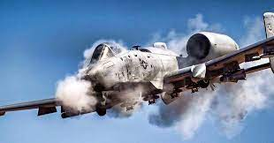

El Fairchild-Republic A-10 Thunderbolt II es un avión de ataque a tierra monoplaza, birreactor y de ala recta, desarrollado en Estados Unidos por la compañía Fairchild-Republic a principios de los años 1970. Fue diseñado a petición de la Fuerza Aérea de los Estados Unidos (USAF) para proporcionar apoyo aéreo cercano (CAS) a las tropas terrestres mediante el ataque a carros de combate, vehículos blindados y otros objetivos terrestres con una capacidad limitada de interdicción aérea. Es el primer avión de la USAF diseñado exclusivamente para misiones CAS. El A-10 está diseñado en torno al GAU-8 Avenger, un potente cañón rotativo de 30 mm que le da su caracteristico sonido al disparar. Su sobrenombre oficial, Thunderbolt II (‘rayo’ en inglés), viene del Republic P-47 Thunderbolt de la Segunda Guerra Mundial, un cazabombardero que fue especialmente efectivo en la misión de apoyo aéreo cercano. Sin embargo, el A-10 es más conocido por su apodo Warthog o simplemente Hog.
